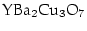
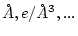
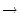
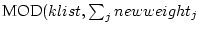
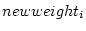
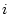
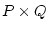
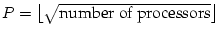
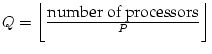

In order to run WIEN2k several c-shell scripts are provided which link the individual programs to specific tasks.
All available (user-callable) commands have the ending _lapw so you can easily get a list of all commands using
ls $WIENROOT/_lapwin the directory of the WIEN2k executables. (Note: all of the more important commands have a link to a short name omitting ``_lapw''.) All these commands have at least one option, -h, which will print a small help indicating purpose and usage of this command.
The main script, which executes a single program with automatic creation of the respective ``def``-file is called x_lapw or x . You can call it with several switches to provide the proper file definitions in case of semicore, spin-polarized or complex calculations. All options are listed with the help switch
x -h or x_lapw -h
This script can also be run from w2web by using the ``Single Programs'' menu.
USAGE: x PROGRAMNAME [flags]
PURPOSE:runs WIEN executables: afminput,aim,clmcopy,lcore,dmat,
dstart,eosfit,filtvec,init_xspec,hex2rhomb,irrep,joint,kgen,kram,
lapw0,lapw1,lapw2,lapw3,lapw5,lapw7,lapwdm,lapwso,orb,lorentz,lstart,mini,
mixer,nn,plane,qtl,optic,optimize,rhomb_in5,sgroup,spaghetti,sumpara,
supercell,symmetry,symmetso,telnes2,broadening,tetra,txspec,xspec
FLAGS:
-f FILEHEAD -> FILEHEAD for path of struct & input-files
-t/-T -> suppress output of running time
-h/-H -> help
-d -> create only the def-file
-up -> runs up-spin
-dn -> runs dn-spin
-sc -> runs semicore calculation
-c -> complex calculation (no inversion symmetry present)
-p -> run lapw1/2/so in parallel (needs .machines file)
-orb -> runs lapw1 with LDA+U/OP or B-ext correction
-it -> runs lapw1 with iterative diagonalization
-nohns-> runs lapw1 without HNS
-qtl -> calculates QTL in lapw2
-band -> for bandstructures: unit 4 to 5 (in1), sets QTL and ROOT (in2)
-fermi-> calculates Fermi energy and weights in lapw2
-efg -> calculates lapw2 with EFG switch
-so -> runs lapw2 with def-file for spin-orbit calculation
-fft -> runs dstart only up to case.in0_std creation
-sel -> use reduced vector file in lapw7
-settol 0.000x -> run sgroup with different tolerance
-sigma-> run lstart with case.inst_sigma (autogenerated) for diff.dens.
USE: x -h PROGRAMNAME for valid flags for a specific program
Note: To make use of a scratch file system, you may specify such a filesystem in the environment variable SCRATCH (it may already have been set by your system administrator). However, you have to make sure that there is enough disk-space in the SCRATCH directory to hold your case.vector* and case.help* files.
In order to start a new calculation, one should make a new subdirectory and run all calculations from there. At the beginning one must provide at least one file (see 3), namely case.struct (see 4.3) (case.inst can be created automatically on the ``fly'', see 6.4.3), then one runs a series of programs using init_lapw. This script is described briefly in chapter 4.5) and in detail in ``Getting started'' for the example TiC (see chapter 3). You can get help with switch -h. All actions of this script are logged in short in :log and in detail in the file case.dayfile, which also gives you a ``restart'' option when problems occurred. In order to run init_lapw starting from a specific point on, specify -s PROGRAM.
init_lapw supports a ``batch'' mode (non-interactive) for trivial cases AND experienced users. You can supply various options and specify spin-polarization, XC-potential, RKmax, k-mesh or mixing. See init_lapw -h for more details. Changes to case.struct by nn will be accepted, but by sgroup will be neglected.
In order to perform a complete SCF calculation, several types of scripts are provided with the distribution. For the specific flow of programs see chapter 4.5.
Cases with/without inversion symmetry and with/without semicore or core states are handled automatically by these scripts. All activities of these scripts are logged in short in :log (appended) and in detail together with convergence information in case.dayfile (overwriting the old ``dayfile``). You can always get help on its usage by invoking these scripts with the -h flag.
run_lapw -h
PROGRAM: /zeus/lapw/WIEN2k/bin/run_lapw
PURPOSE: running the nonmagnetic scf-cycle in WIEN
to be called within the case-subdirectory
has to be located in WIEN-executable directory
USAGE: run_lapw [OPTIONS] [FLAGS]
OPTIONS:
-cc LIMIT -> charge convercence LIMIT (0.0000 e)
-ec LIMIT -> energy convercence LIMIT (0.0001 Ry)
-fc LIMIT -> force convercence LIMIT (0 mRy/a.u.)
default is -ec 0.0001; multiple convergence tests possible
-e PROGRAM -> exit after PROGRAM ()
-i NUMBER -> max. NUMBER (40) of iterations
-s PROGRAM -> start with PROGRAM ()
-r NUMBER -> restart after NUMBER (40) iterations (rm *.broyd*)
-nohns NUMBER ->do not use HNS for NUMBER iterations
-ql LIMIT -> select LIMIT (0.05) as min.charge for E-L setting in new in1
-in1new N -> use "new" in1 file after N iter (rewrite in1 using scf info)
-it N -> use N iterative/one full diagonalizations (after first cycle)
-it0 N -> use N iterative/one full diagonalizations (also in first cycle)
FLAGS:
-h/-H -> help
-I -> with initialization of in2-files to "TOT"
-NI -> does NOT remove case.broyd* (default: rm *.broyd* after 60 sec)
-p -> run k-points in parallel (needs .machine file [speed:name])
-so -> run SCF including spin-orbit coupling
-renorm-> start with mixer and renormalize density
-in1orig-> use case.in1_orig file (after a previous -in1new)
CONTROL FILES:
.stop stop after SCF cycle
.fulldiag force full diagonalization
ENVIRONMENT VARIBLES:
SCRATCH directory where vectors and help files should go
Additional flags valid only for magnetic cases (runsp_lapw) include:
-dm -> calculate the density matrix (when -so is set, but -orb is not) -eece -> use "exact exchange+hybrid" methods -orb -> use LDA+U, OP or B-ext correction -orbc -> use LDA+U correction, but with constant V-matrix
Calling run_lapw (after init_lapw) from the subdirectory case will perform up to 40 iterations (or what you specified with switch -i) unless convergence has been reached earlier. You can choose from three convergence criteria, -ec (the total energy convergence is the default and is set to 0.0001 Ry for at least 3 iterations), -fc (magnitude of force convergence for 3 iterations) or -cc (charge convergence, just the last iteration), but only one criterion can be specified. Be careful with these criteria, different systems will require quite different limits (e.g. fcc Li can be converged to Ry,  only to 0.1 mRy). You can stop the scf iterations after the current cycle by generating an empty file .stop (use eg. touch .stop in the respective case-directory).
The scf-cycle creates case.broyd* files which contain the "charge-history". Once run_lapw has finished, you should usually "save_lapw" (see below) the results. If you continue with another run_lapw the "broyden-files" will be deleted unless you specify -NI.
With -e PROGRAM you can run only part of one scf cycle (e.g. run lapw0, lapw1 and lapw2), with -s PROGRAM you can start at an arbitrary point in the scf cycle (e.g. after a previous cycle has crashed and you want to continue after fixing the problem) and continue to self-consistency. Before mixer is invoked, case.clmsum is copied to case.clmsum_old, and the final ``important`` files of the scf calculation are case.clmsum and case.scf.
Invoking
run_lapw -I -i 30 -fc 0.5
will first set in case.in2 the TOT-switch (if FOR was set) to save cpu time, then run up to 30 scf cycles till the force criterion of 0.5 mRy/a.u. is met (for 3 consecutive iterations). Then the calculation of all terms of the forces is activated (setting FOR in case.in2) for a final iteration.
The switch -in1new N preserves for N iteration the default case.in1 file, thus using the ``old'' WIEN97 scheme to select the energy parameters. After the first N iterations write_in1_lapw is called and a new case.in1 file is generated, where the energy parameters are set according to the :EPLxx and :EPHxx values of the last scf iteration and the -ql value (see sections 4.4 and 7.3). In this way you select the best possible energy-parameters and also additional LOs to improve the linearization may be generated automatically. Note, however, that this option is potentially dangerous if you have a ``bad'' last iteration (or large changes from one scf iteration to the next. The switch -in1orig can be used to switch back to the original (``old'') scheme.
Parallelization is described in Sec. 5.5.
Iterative diagonalization, which can significantly save computer time in cases with ``few electrons'' and ``large matrices (larger than 4000)'', is described in Sec. 7.3. It needs the case.vector file from the previous scf-iteration and this file is copied to case.vector.old when the -it N switch is set. Since the iterative diagonalization scheme alone would not lead to a converged (correct) total energy, one should perform every N iterations a ``full'' (exact) diagonalization. Typically we recommend N = 4-8.
You can save computer time by performing the first scf-cycles without calculating the non-spherical matrix elements in lapw1. This option can be set for N iterations with the -nohns N switch.
If you have a previous scf-calculation and changed lattice parameters or positions (volume optimization or internal positions minimization), we recommend to use -renorm to renormalize the density prior to the first iteration.
For magnetic systems which are difficult to converge you can use the script runfsm_lapw -m M (see section 4.5.3) for the execution of fixed-spin moment (FSM) calculations.
After self-consistency has been reached, the script
save_lapw head_of_save_filename
saves case.clmsum, case.scf, case.dmat, case.vorb and case.struct under the new name and removes the case.broyd* files. Now you are ready to modify structural parameters or input switches and rerun run_lapw, or calculate properties like charge densities (lapw5), total and partial DOS (tetra) or energy bandstructures (spaghetti).
For more complicated situations, where many parameters will be changed, we have extended save_lapw so that calculations can not only be saved under the head_of_save_filename but also a directory can be specified. If you use any of the possible switches (-a, -f, -d, -s) all input files will be saved as well (and can be restored using restore_lapw).
Options to save_lapw can be seen with
save_lapw -h
Currently the following options are supported
| -h | help |
| -a | save all input files as well |
| -f | force save_lapw to overwrite previous saves |
| -d directory | save calculation in directory specified |
| -s | silent operation (no output) |
To restore a calculation the script restore_lapw can be used. This script restores the struct, clmsum, vorb and dmat files as well as all input files. Note: This script works only in conjunction with the new scheme of save_lapw, i.e. when you have saved a calculation in an extra directory.
Options to restore_lapw are:
| -h | help |
| -f | force restore_lapw to overwrite previous files |
| -d directory | restore calculation from directory specified |
| -s | silent operation (no output) |
| -t | only test which files would be restored |
Once a case has been completed you can clean up the directory with this command. Only the most important files (scf, clmsum, struct, input and some output files) are kept. It is very important to use this command when you have finished a case, since otherwise the large vector and helpXX files will quickly fill up all your disk space.
This script migrates a case to a remote computer (to be called within the case-dir). Needs working ssh/scp without password; local and remote case-dir must have the same name.
Call it within the desired case-dir as:
migrate_lapw [FLAGS OPTIONS] [user@]host:path/case-dir
with the following options:
-put -> transfer of files to a remote host (default)
-get -> transfer of files from a remote host
-all -> the complete directory is copied
-start -> only files to start an scf cycle are copied (default for put)
-end -> only new files resulting from an scf cycle are copied
(default for get)
-save savedir -> "save_lapw -d save_dir" is issued and only save_dir is copied
FLAGS:
-h -> help
-clean -> a clean_lapw is issued before copying
-r -> files in source directory are removed after copying
-R -> source directory (and all files) are removed after copying
-s -> do it silent (in batch mode)
-z -> gzip files before scp (slow network)
This script generates case.inst from a case.struct file. It can be used instead of the ``Structure-generator'' of w2web. Note: the label ``RMT'' is necessary in case.struct.
This perl-script executes x nn and uses its output to determine the atomic sphere radii (obeying recommended ratios for H, sp-, d- and f- elements). It is called automatically within init_lapw or you may call it separately using:
setrmt_lapw case [-r X ]
where case gives the head of the case.struct file. You may specify a reduction of the RMTs by X percent in order to allow for structural optimizations. It creates case.struct_setrmt.
This script searches for .running.* files within the current directory (or the directory specified with ``-d full_path_directory'') and then performs a ps command for these processes. If the specified process has not been found, it removes the corresponding .running.* file after confirmation (default) or immediately (when ``-f'' has been specified).
This script searches for .running.* files within the current directory (or the directory specified with ``-d full_path_directory'') and then kills the corresponding process after confirmation (default) or immediately (when ``-f'' has been specified). It is particular usefull for killing ``k-point parallel'' jobs.
This script extracts the critical points (CP) after a Bader analysis (x aim (-c)) from case.outputaim. It sorts them (according to the density), removes duplicate CPs, converts units into  and produces critical_points_ang.
It is used with: extractaim_lapw case.outputaim
This program was contributed by:
It produces a plot of some quantities as function of iteration number (a maximum of 6 quantities is possible at once) from the case.scf file as specified on the commandline using analyse_lapw and GNUPLOT. This plot is updated in regular intervals.
You can call scfmonitor_lapw using:
scfmonitor_lapw [-h] [-i n] [-f case.scf] [-p] arg1 [arg2 .. arg6]
-h help switch -i n show only the last n iterations -f scf-file use "scf-file" instead of the default "case.scf" -p produces file "scfmonitor.png" instead of X-window plot arg1,... arguments to monitor (like ":ENE" or ":DIS" , see analyse_lapw )
The scfmonitor can also be called directly from w2web using the "Analyse" tool.
In order to have a reasonable behavior of scfmonitor the GNUPLOT window should stay in background. This can be achieved by putting a line into your .Xdefaults file like:
gnuplot*raise: off
Note: It does not make sense to start scfmonitor before the first cycle has finished because no case.scf exists at this point.
The script analyse_lapw is usually called from scfmonitor_lapw. It "greps" from an scf-file the specified arguments and produces analyse.out.
analyse_lapw is called using:
analyse_lapw [-h] scf-file arg1 [arg2 arg3 arg4 arg5 arg6]
-h help switch
scf-file "scf-file" to analyse (there's no default "case.scf" !)
arg1,... arguments to analyse:
atom independend: :ENE :DIS :FER :MMT
atom iii dependend: :CTOiii :CUPiii :CDNiii :NTOiii :NUPiii :NDNiii
:DTOiii :DUPiii :DDNiii :RTOiii :EFGiii :HFFiii
:MMIiii
vector quantities: :FORiii[x/y/z] :POSiii[x/y/z] :FGLiii[x/y/z]
where magnitude z z is the default
For vector quantities like :FGLiii or :POSiii (usefull with case.scf_mini) one can
specify the respective coordinate by adding x/y/z to the corresponding labels.
grepline_lapw :label 'filename*.scf' lines_for_tail or
grepline :label 'filename*.scf' lines_for_tailyou can get a list of a quantity ``:label'' (e.g. :ENE for the total energy) from several scf files at once.
initso_lapw or
initsoand you should carefully follow the instructions and explanations of the script.
#!/bin/csh -f
foreach i ( \
tic_vol_-10.0 \
tic_vol__-5.0 \
tic_vol___0.0 \
tic_vol___5.0 \
tic_vol__10.0 \
)
cp $i.struct tic.struct
# cp $i.clmsum tic.clmsum
# x dstart
# run_lapw -ec 0.0001 -in1new 3 -in1orig -renorm
run_lapw -ec 0.0001
set stat = $status
if ($stat) then
echo "ERROR status in" $i
exit 1
endif
save_lapw $i
# save_lapw -f -d XXX $i
end
You may modify this script according to your needs (use runsp_lapw or even min_lapw, specify different convergence parameters, save into a directory to separate e.g. ``gga'' and ``lda'' results, activate the line ``x dstart'' or `` cp $i.clmsum case.clmsum'' to use a previously saved clmsum file, e.g. from a calculation with smaller RKmax, ...)
Note: You must have a case.clmsum file (either from init_lapw or from a previous scf calculation) in order to run optimize.job.
After execution of this script you should have a series of scf-files with energies corresponding to the modified parameters, which should allow you to find the corresponding equillibrium parameters. For the volume optimization an analysis tool is available, other tools are under development).
Using the script grepline (or the ``Analysis  Analyze multiple SCF-files'' menu of w2web) you get a summary of the total energy vs. volume (c/a). The file case.analysis can be used in eplot_lapw to find the minimum total energy and the equilibrium volume (c/a). Supported equation of states include the EOS2, Murnaghan and Birch-Murnaghan EOS.
grepline :ENE '*.scf' 1 > case.analysis
grepline :VOL '*.scf' 1 » case.analysis
Using such strategies also higher-dimensional optimizations (e.g. c/a ratio and volume) are possible in combination with the -d option of save_lapw.
For optimization of more degrees of freedom (2-4 lattice parameters), you can use the corresponding option and for analysis of the data the script parabolfit_lapw together with the program eosfit6. It performs a non-linear least squares fit, using a parabolic fit-function in your variables and get an analytic description of your energy surface. Please note, this is only a harmonic fit (no odd or higher terms) and the description may not be very good if your parameter range is large and/or the function is quite anharmonic, or you suffer from numerical noise.
For the determination of elastic constants see the description of ELAST in sec 8.14.
A typical sequence of commands for an optimization of the internal positions would look like:
Without -NI switch min_lapw performs an initialization first:
Note, mini requires an input file case.inM (see Sec. 8.15) which is created automatically and MUST NOT be changed while min_lapw is running (except the force tolerance, which terminates the optimization).
We recommend the PORT minimization method, a reverse-communication trust-region Quasi-Newton method from the Port library, which seems to be stable, efficient and does not depend too much on the users input (DELTAs, see below with NEWT). The PORT option also produces a file .min_hess, which contains the (approximate) Hessian matrix (lower-triangle Cholesky factor) If you restart a minimization with different k-points, RMT, RKmax, ... or do a similar calculation (eg. for a different volume, ...) it will be copied to .minrestart (unless -nohess is specified), so that you start with a reasonable approximation for the Hessian. When using PORT you may also want to check its progress using
grep :LABEL case.outputMwhere :LABEL is :ENE (should decrease), :GRAD (should also go down, but could sometimes also go up for some time as long as the energy still decreases), :MIN (provides a condensed summary of the progress), :WARN may indicate a problem), :DD (provides information about the step sizes and mode used). Some general explanations are:
Sometimes PORT gets "stuck" (often because of inconsistencies of energy and forces due to insufficient scf convergence or a very non-harmonic potential energy surface). A good alternative is NEW1, which is a "sophisticated" steepest-descent method with optimized step size. It can be very efficient in certain cases, but can also be rather slow when the potential energy surface is rather flat in one, but steep in another direction (eg. a weakly bound molecule on a surface, but constraining the sensitive parameters, like the bond distance of the molecule, may help).
Another alternative is NEWT, where one must set proper "DELTAs" and a "FRICTION" for each atom. Unfortunately, these DELTAs determine crucially how the minimization performs. Too small values lead to many (unnecessary) "geometry steps", while too large DELTAs can even lead to divergence (and finally to a crash). Thus you MUST control how the minimization performs. We recommend the following sequence after 2-3 geometry steps:
grep :ENE *mini :ENE : ********** TOTAL ENERGY IN Ry = -2994.809124 :ENE : ********** TOTAL ENERGY IN Ry = -2994.813852 :ENE : ********** TOTAL ENERGY IN Ry = -2994.818538Good, since the total energy is decreasing.
grep :FGL001 *mini :FGL001: 1.ATOM 0.000 0.000 18.219 :FGL001: 1.ATOM 0.000 0.000 12.375 :FGL001: 1.ATOM 0.000 0.000 7.876Good, since the force (only a force along z is present here) is decreasing reasonably fast towards zero. You must check this for every atom in your structure.
When you detect oszillations or too small changes of the forces during geometry optimization, you will have to decrease/increase the DELTAs in case.inM and rm case.tmpM. (NOTE: You must not continue with modified DELTAs but keeping case.tmpM.) Alternatively, stop the minimization (touch .minstop and wait until the last step has finished), change case.inM and restart.
You can get help on its usage with:
min -h or min_lapw -h
PROGRAM: min USAGE: min [OPTIONS] OPTIONS: -j JOB -> job-file JOB (default: run_lapw -I -fc 1. -i 40 ) -p -> adds -p (parallel) switch to JOB -sp -> uses runsp in default JOB -nohess -> removes .minrestart (initial Hessian) from previous minimization -m -> extract force-input and execute mini (without JOB) and exit -mo -> like -m but without copying of case.tmpM1 to case.tmpM -h/-H -> help -NI -> without initialization of minimization (eg. continue after a crash) -i NUMBER -> max. NUMBER (50) of structure changes -s NUMBER -> save_lapw after NUMBER of structure changes CONTROL FILES: .minstop stop after next structure changeFor instance for a spin-polarized case, which converges more difficultly, you would use:
min -j ``runsp_lapw -I -fc 1.0 -i 60''
Calculations of phonons is based on a program PHONON by K.Parlinski, which runs under MS-Windows and must be ordered separately (see http://wolf.ifj.edu.pl/phonon/ )
You would define the structure of your compound in PHONON together with a supercell of sufficient size (e.g. 64 atoms). PHONON will then generate a list of necessary displacements of the individual atoms. The resulting file case.d45 must be transfered to UNIX. Here you would run WIEN2k-scf calculations for all displacements and collect the resulting forces, which will be transfered back to PHONON (case.dat and/or case.dsy). With these force information PHONON calculates phonon at arbitrary q-vectors together with several thermodynamic properties.
A script run_phonon has been created. Modify it according to your needs (parallelization,....) and run all cases to selfconsistency.
Note that good force convergence is essential (at least 0.1 mRy/bohr) and if your structure has free parameters, either very good equillibrium positions must have been found before, or even better, use both, positive and negative displacements to average out any resulting error from non-equillibrium positions.
This section describes two methods for running WIEN2k on parallel computers. One method, parallelizing k-points over processors, utilizes c-shell scripts. This method works with all standard flavors of Unix without any special requirements. This parallelization was already available in WIEN97 and is very efficient even on heterogeneous computing environments, e.g. on heterogeneous clusters of workstations, but also on dedicated parallel computers.
The other parallelization method, which comes new with WIEN2k, is based on fine grained methods. It is especially useful for large systems, if the required memory size is no longer available on a single computer or in situations where more processors than k-points are available.
The k-point parallelization uses a dynamic load balancing scheme and is therefore often preferred on heterogeneous compute environments and on networks of workstations or PCs, if interactive users contribute to the processors' work load. The fine grained parallelization method relies on static load balancing, therefore, in a heterogeneous environment, the slowest processor sets the pace. In many cases, a combination of both parallelization methods is favorable (always use k-point parallelism if you have more than 1 k-point).
Parts of the code are executed in parallel, namely LAPW1, LAPWSO, LAPW2, LAPWDM, and OPTIC. These are the numerically intensive parts of most calculations.
Parallelization is achieved on the k-point level by distributing subsets of the k-mesh to different processors and subsequent summation of the results. The implemented strategy can be used both on a multiprocessor architecture and on a heterogeneous (even multiplatform) network.
To make use of the k-point parallelization, make sure that your system meets the following requirements:
Unfortunately the command for launching a remote shell is platform dependent, and can be 'rsh' or 'remsh'. On some systems 'rsh' refers to the restricted shell. Please check these commands on your system and change the line
set remote = rsh or remsh or sshin the scripts lapw1para_lapw, lapwsopara_lapw, lapw2para_lapw, lapwdmpara_lapw and opticpara_lapw accordingly (In the following we use the shortcut without _lapw). This modification is done automatically by siteconfig_lapw during installation (see chapter 11).
Fine grained parallel versions are available for the programs
lapw0, lapw1, and lapw2.
This parallelization method is based on parallelization libraries, including
MPI, ScaLapack, and PBlas.
The required libraries are not included with WIEN2k.
On parallel computers, however, they are usually installed.
Otherwise, free versions of these libraries are
available![[*]](footnote.png) .
.
The parallelization affects the naming scheme of the executable programs: the fine grained parallel versions of lapw0/1/2 are called lapw0_mpi, lapw1[c]_mpi, and lapw2[c]_mpi. These programs are executed by calls to the local execution environments, as in the sequential case, by the scripts x, lapw0para, lapw1para, and lapw2para. On most computers this is done by calling mpirun.
To start the calculation in parallel, a switch must be set and an input file has to be prepared by the user.
Generation of all necessary files, starting of the processes and summation of the results is done by the appropriate scripts lapw1para, lapwsopara,lapwdmpara and lapw2para (when using -p), and parallel programs lapw0_mpi, lapw1_mpi, and lapw2_mpi (when using fine grained parallelization has been selected in the .machines file).
The following .machines file describes a simple example. We assume to have 5 computers, (alpha, ... epsilon), where epsilon has 4, and delta and gamma 2 cpus. In addition, gamma, delta and epsilon are 3 times faster than alpha and beta.:
# This is a valid .machines file
#
granularity:1
1:alpha
1:beta
3:gamma:2 delta
3:delta:1 epsilon:4
residue:delta:2
lapw0:gamma:2 delta:2 epsilon:4
To each set of processors, defined by a single line in this file, a certain number of k-points is assigned, which are computed in parallel. In each line the weight (relative speed) and computers are specified in the following form:
weight:machine_name1:number1 machine_name2:number2 ...where weight is an integer (e.g. a three times more powerful machine should have a three times higher weight). The name of the computer is machine_name[1/2/...], and the number of processors to be used on these computers are number[1/2/...]. If there is only one processor on a given computer, the :1 may be omitted. Empty lines are skipped, comment lines start with #.
Assuming there are 8 k-points to be distributed in the above example, they are distributed as follows. The computers alpha and beta get 1 each. Two processors of computer gamma and one processor of computer delta cooperate in a fine grained parallelization on the solution of 3 k-points, and one processor of computer delta plus four processors of computer epsilon cooperate on the solution of 3 k-points. If there were additional k-points, they would be calculated by the first processor (or set of processors) becoming available. With higher numbers of k-points, this method ensures dynamic load balancing. If a processor is busy doing other (e.g., interactive) work, the overall calculation will not stall, but most of its work will be done by other processors (or sets of processors using MPI). This is, however, not an implementation for fail safety: if a process does not terminate (e.g., due to shutdown of a computer) the calculation will never terminate. It is up to the user to handle with such hardware failures by modifying the .machines file and restarting the calculation at the appropriate point.
During the run of lapw1para the file .processes is generated. This file is used by lapw2para to determine which case.vector* to read.
By default lapw1para will generate approximately 3 vector-files per processor, if enough k-points are available for distribution. The factor 3 is called ``granularity'' and should allow some load balancing in heterogeneous environments. If during siteconfig_lapw a shared memory system was selected, ``granularity'' will be set by default to 1.
For performance reasons a different ``granularity'' can be specified, by adding the line
granularity:new_granularityto the .machines file. In particular on shared memory machines it is advisable to add a ``residue machine'' to calculate the surplus (residual) k-points (given by the expression ) and rely on the operating system's load balancing scheme. Such a ``residue machine'' is specified as
residue:machine_name:numberin the .machines file.
Alternatively, it is also possible to distribute the remaining k-points one-by-one (and not in one junk) over all processors. The option
extrafine:1can be set in the .machines file. Note, each (set of) process(es) in the k-point parallelization gets their own input files and creates a set of output files. To keep the number of files small, the number for granularity should be decreased ( and extrafine should eventually not be set). The line
lapw0:gamma:2 delta:2 epsilon:4defines the computers used for running lapw0_mpi. In this example the 6 processors of the computers gamma, delta, and epsilon run lapw0_mpi in parallel.
If fine grained parallelization is used, each set of processors defined in the .machines file is converted to a single file .machine[1/2/...], which is used in a call to mpirun (or another parallel execution environment).
In the setup of the k-point parallel version of LAPW1 the list of k-points in case.klist (Note, that the k-list from case.in1 cannot be used for parallel calculations) is split into subsets according to the weights specified in the .machines file:
where  is the number of k-points to be calculated on processor i. is always set to a value greater equal one.
A loop over all  processors is repeated until all k-points have been processed.
Speedup in a parallel program is intrinsically dependent on the serial or
parallel parts of the code according to Amdahl's law:
In WIEN2k usually only a small part of time is spent in the programs lapw0, lcore and mixer which is very small (negligible) in comparison to the times spent in lapw1 and lapw2. The time for waiting until all parallel lapw1 and lapw2 processes have finished is important too. For a good performance it is therefore necessary to have a good load balancing by estimating properly the speed and availability of the machines used. We encourage the use of testpara_lapw or ``Utils. testpara'' from w2web to check the k-point distribution over the machines before actually running the programs in parallel.
While running lapw1 and lapw2 in parallel mode, the scripts testpara1_lapw (see 5.2.13) and testpara2_lapw (see 5.2.14) can be used to monitor the succession of parallel execution.
To see how files are handled by the scripts lapw1para and lapw2para refer to figures 5.1 and 5.2. After the lapw2 calculations are completed the densities and the informations from the case.scf2_x files are summarized by sumpara.
Note: parallel lapw2 and sumpara take two command line arguments, namely the case.def file but also a number_of_processor indicator.
The following parallel programs use different parallelization strategies:
Let us assume, for example, 64 processors. In a given processing step, one of these processors has to communicate with the other 63 processors if a one-dimensional setup was chosen. In the case of a two-dimensional processor setup it is usually sufficient to communicate with the processors of the same processor row (7) or the same processor column (7), i.e. with 14 processors.
In some cases a price has to be paid for these preferable communication patterns: Assume that 17 processors are available to calculate one k-point. In this case lapw1_mpi will choose a 44 processor setup, which leaves one processor to contribute only to the calculation of some intermediate results.
In general the processor array  is chosen as follows: , .
If more than one k-point is distributed at once to lapw1_mpi or lapw2_mpi, these will be treated consecutively.
Depending on the parallel computer system and the problem size, speedups will vary in a wide range. Running the fine grained parallelization over a 10Mbit/s Ethernet network is not recommended, even for large problem sizes.
help_lapw
which opens the pdf-version of the users guide (using acroread or what is defined in $PDFREADER). You can search for a specific keyword using ``f keyword''. This procedure substitutes an ``Index'' and should make it possible to find a specific information without reading through the complete users guide.
We have included a few ``interface scripts'' into the current WIEN2k distribution, to simplify the previewing of results. In order to use these scripts the public domain program ``gnuplot'' has to be installed on your system.
The script eplot_lapw plots total energy vs. volume or total energy vs. c/a-ratio using the file case.analysis. The latter should have been created with grepline (using :VOL and :ENE labels) or the ``Analysis Analyze multiple SCF-files'' menu of w2web and the file names must be generated (or compatible) with ``optimize.job''.
For a description of how to use the script for batch like execution call the script using
eplot_lapw -h
The script parabolfit_lapw is an interface for a harmonic fitting of E vs. 2-4-dim lattice parameters by a non-linear least squares fit (eosfit6) using PORT routines. Once you have several scf calculations at different lattice parameters (usually generated with optimize.job) it generates the required case.ene and case.latparam from your scf files. Using
parabolfit_lapw [ -t 2/3/4 ] [ -f FILEHEAD ] [ -scf '*xxx*.scf' ]
you can optionally specify the dimensionality of the fit or the specific scf-filenames.
The script dosplot_lapw plots total or partial Density of States depending on the input used by case.int and the interactive input.
For a description of how to use the script for batch like execution call the script using
dosplot_lapw -h
specplot_lapw provides an interface for plotting X-ray spectra from the output of the xspec or txspec program.
For a description of how to use the script for batch like execution call the script using
specplot_lapw -h
The script rhoplot_lapw produces a surface plot of the electron density from the file case.rho created by lapw5.
Note: To use this script you must have installed the C-program reformat supplied in SRC_reformat.
The script opticplot_lapw produces XY plots from the output files of the optics package using the case.joint, case.epsilon, case.eloss, case.sumrules or case.sigmak. For a description of how to use the script for batch like execution call the script using
opticplot_lapw -h